Top Masteries
 By
MrOwnership
By
MrOwnership
Contents
Intro
We are going to take a look at another metric for greatness, Mastery Awards. Mastery awards are given to users when they complete every achievement for a given set in hardcore mode. Users wear mastery awards as a badge of honor on their profile page representing all the hard work they put into truly becoming a master of the game.
Below we will take a look at which users rank among the best with the most mastery awards in several categories well as notable updates from the previous month to each individual category. Check to see how you rank among the rest of the community members.
Special thanks to  Nydaxn for creating the ranking images.
Nydaxn for creating the ranking images.
Current Champions
|
|
|
Mastery Awards |
|---|---|---|
| Total Awards |  MaxMilyin MaxMilyin |
581 |
| Arcade |  DUT DUT |
47 |
| Atari 2600 |  PMniac PMniac |
84 |
| Game Boy |  Shootzy Shootzy |
108 |
| Game Boy Advance |  bonecrusher1022 bonecrusher1022 |
113 |
| Game Boy Color |  Bendyhuman Bendyhuman |
42 |
| Game Gear | Nydaxn |
34 |
| Hack Champ |  HolyShinx HolyShinx |
173 |
| Homebrew Champ | Bendyhuman |
74 |
| Master System |  Jungon Jungon |
49 |
| Mega Drive | DUT |
99 |
| MSX |  Blazekickn Blazekickn |
5 |
| N64 |  Aquator Aquator |
33 |
| NES |  SanMarino SanMarino |
232 |
| Nintendo DS | Bendyhuman |
27 |
| PC Engine |  Infernum Infernum |
29 |
| PC-8000/8800 |  malasdair malasdair |
8 |
| PlayStation |  Alexxi Alexxi |
73 |
| PlayStation Portable |  minibt minibt |
14 |
| Pokémon Mini |  Nevermond12 Nevermond12 |
11 |
| Saturn |  Boldewin Boldewin |
10 |
| SNES |  danibodom danibodom |
145 |
| Virtual Boy |
 Grahamtams & Grahamtams &  multonic multonic
|
4 |
| Watara Supervision |  Sarconius Sarconius |
41 |
Category Rankings
Total Awards
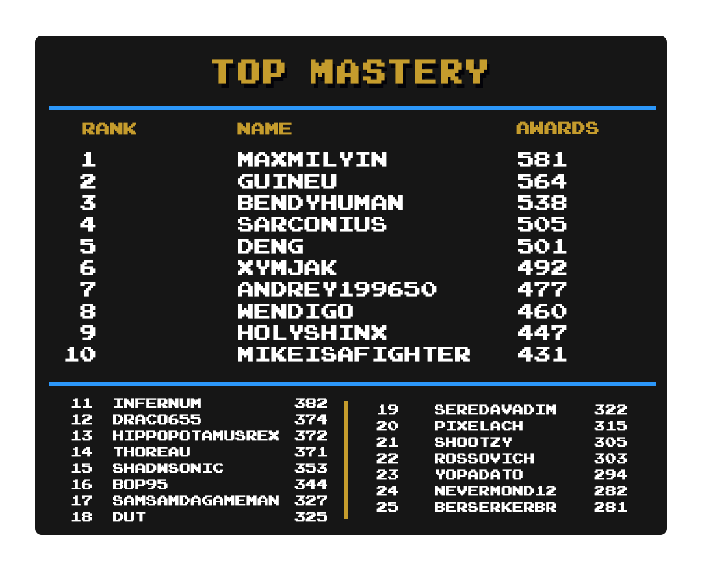
-
MaxMilyin has continues to reign supreme with now 581 total mastery awards.
-
 guineu is continuing to close on that 1st place spot with 22 new mastery awards this month.
guineu is continuing to close on that 1st place spot with 22 new mastery awards this month. -
Infernum and
 ShadwSonic have both jumped up multiple spots with 25 and 31 new mastery awards this month.
ShadwSonic have both jumped up multiple spots with 25 and 31 new mastery awards this month. -
Nevermond12 has made it into the top 25 and is sitting at 24th place with 9 new mastery awards this month.
Notable Milestones
- Congratulations to Blazekickn for reaching over 500 mastery awards.
- Congratulations to
 BlotchJBMR,
BlotchJBMR,  Tvols1480, and bonecrusher1022 for reaching over 200 mastery awards.
Tvols1480, and bonecrusher1022 for reaching over 200 mastery awards.
Arcade
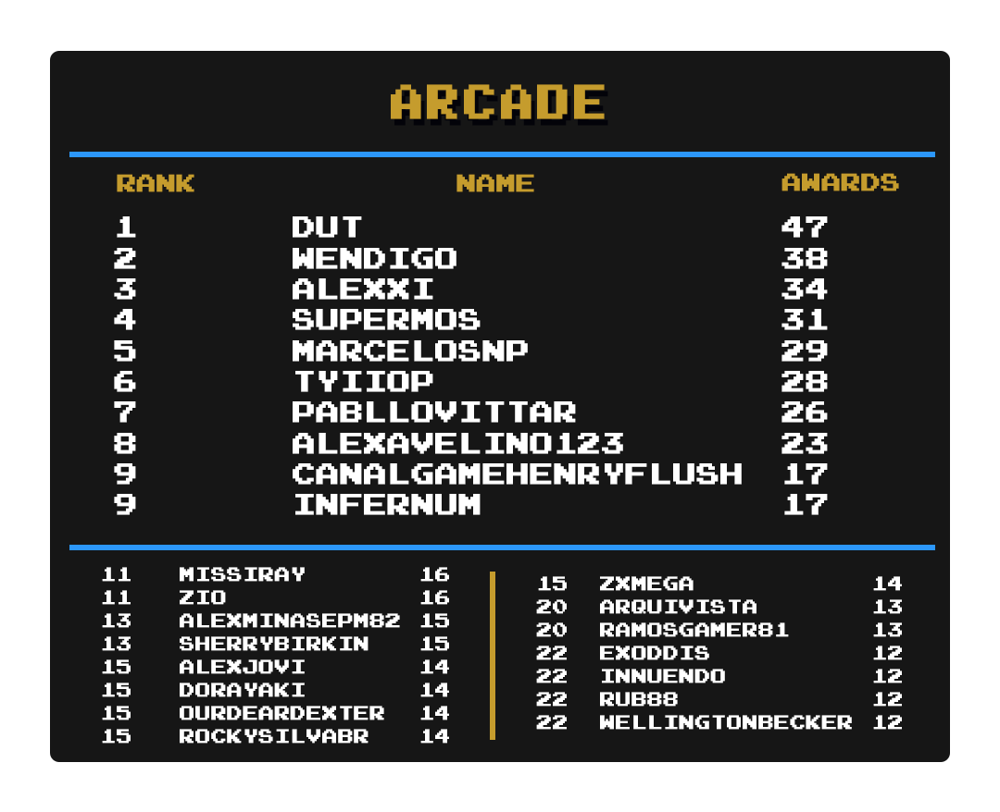
-
 marcelosnp has jumped into 5th place with 3 new mastery awards this month.
marcelosnp has jumped into 5th place with 3 new mastery awards this month. -
 PablloVittar has jumped into 7th place with 10 new mastery awards this month.
PablloVittar has jumped into 7th place with 10 new mastery awards this month. -
 zxmega and
zxmega and  WellingtonBecker have made it into the top 25 and are in a 5-way tie for 15th and a 4-way tie for 22nd place.
WellingtonBecker have made it into the top 25 and are in a 5-way tie for 15th and a 4-way tie for 22nd place.
Atari 2600
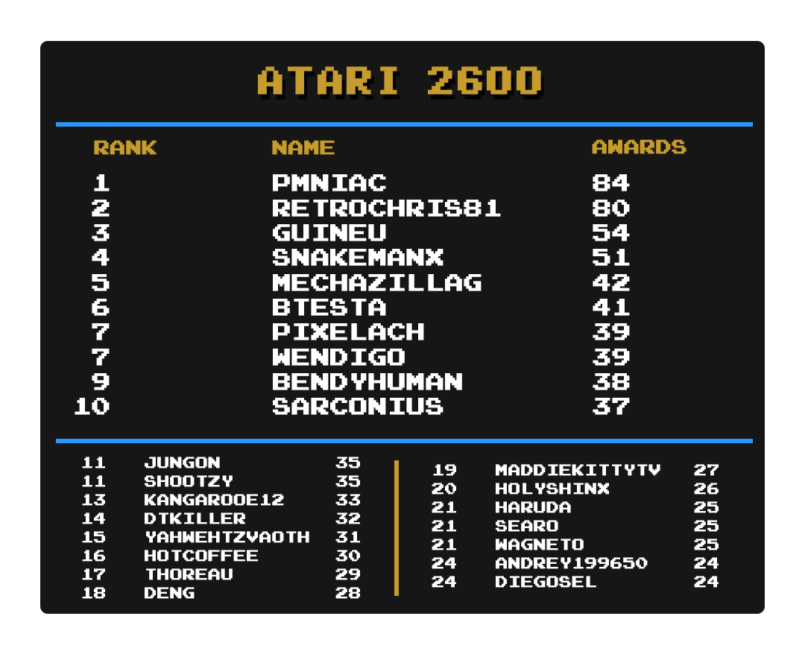
-
PMniac continues to extend the 1st place lead with 3 new mastery awards this month.
-
 YahwehTzVaoth has jumped up a few spots to 15th place with 2 new mastery awards this month.
YahwehTzVaoth has jumped up a few spots to 15th place with 2 new mastery awards this month.
Game Boy
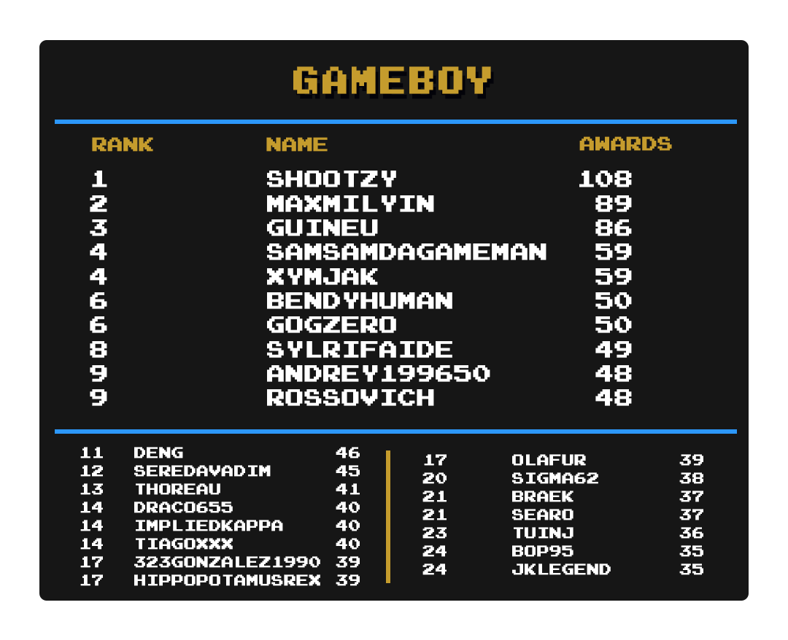
-
Shootzy, MaxMilyin, and guineu are all going strong in this category with 108, 89, and 86 mastery awards. The rest of the competition are far behind with less than 60.
-
Bendyhuman has moved into a tie for 6th place with 2 new mastery awards this month.
-
 BOP95 has made it into the top 25 and is tied for 24th place.
BOP95 has made it into the top 25 and is tied for 24th place.
Game Boy Advance
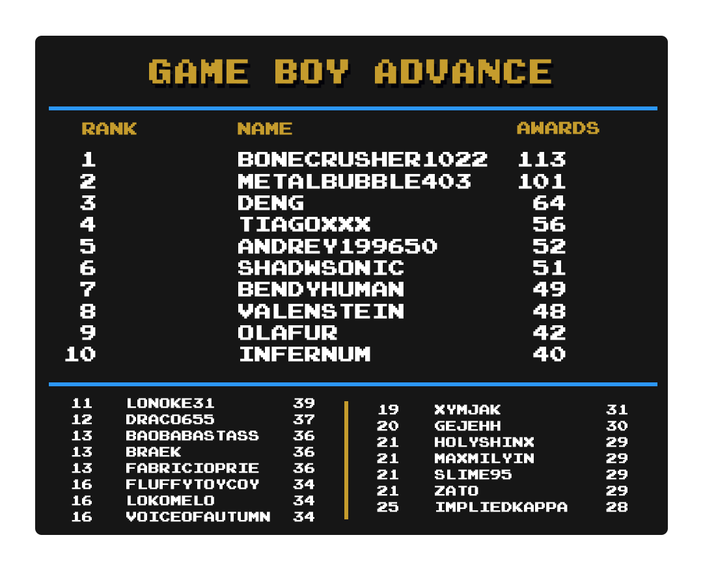
-
bonecrusher1022 continues to hold the lead in this category.
-
 metalbubble403 has reached over 100 mastery awards.
metalbubble403 has reached over 100 mastery awards. -
 Lonoke31 and
Lonoke31 and  Lokomelo have jumped up multiple spots with 5 and 6 new mastery awards this month.
Lokomelo have jumped up multiple spots with 5 and 6 new mastery awards this month.
Game Boy Color
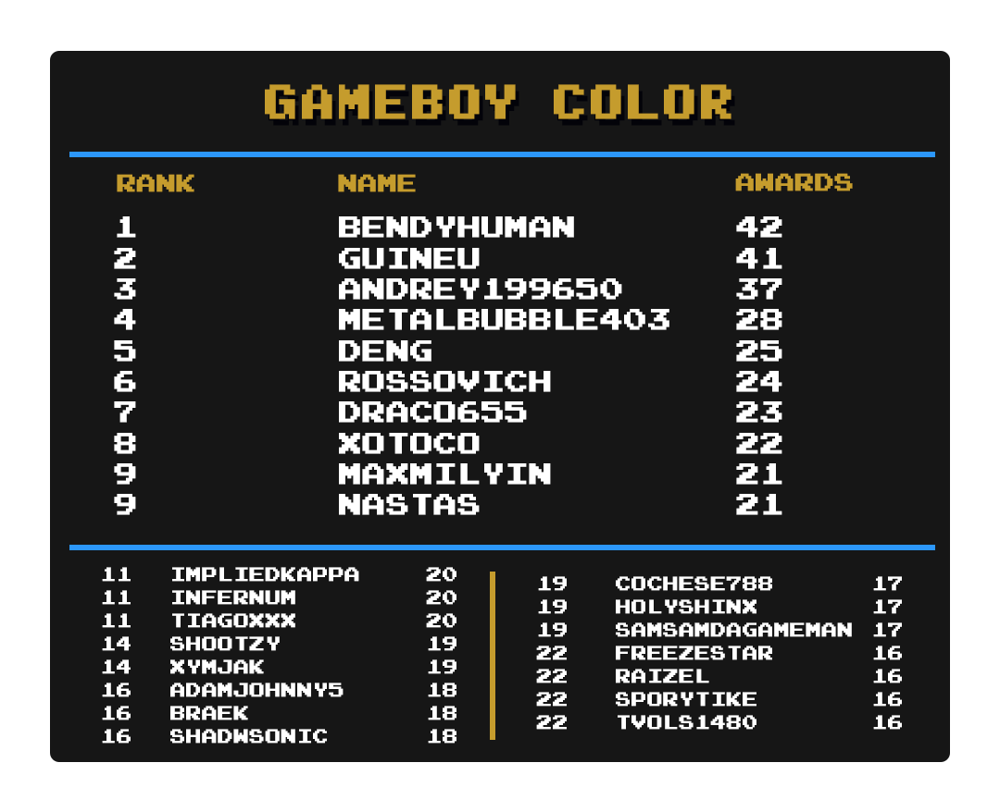
-
Bendyhuman actually lost an award this month due to a set getting a console ID change and is now only 1 award ahead of guineu.
-
 Xotoco has jumped up 9 places into 8th place with 4 new master awards this month.
Xotoco has jumped up 9 places into 8th place with 4 new master awards this month.
Game Gear
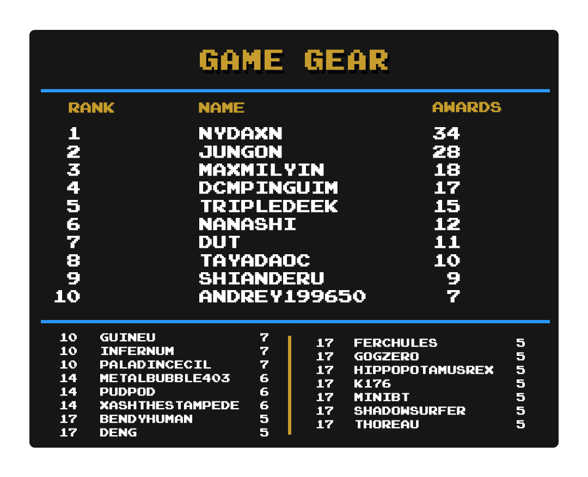
-
Nydaxn extends the 1st place lead with 7 new mastery awards this month.
-
 dcmpinguim has jumped up 11 spots into 4th place with 12 new mastery awards this month.
dcmpinguim has jumped up 11 spots into 4th place with 12 new mastery awards this month. -
Bendyhuman and Blazekickn have made it into the top 25 and are in a 10-way tie for 17th place.
Hack Champ
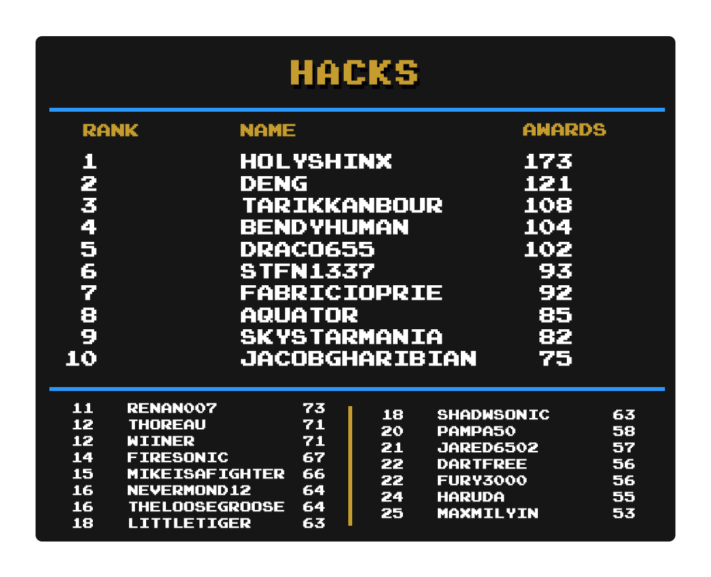
-
HolyShinx is in 1st place by a wide margin of 52 mastery awards over the 2nd place Blazekickn.
-
Bendyhuman has jumped into 4th place with 4 new mastery awards this month.
-
 LittleTiger and ShadwSonic have made it into the top 25 with 12 and 20 new mastery awards this month, both are tied in 18th place.
LittleTiger and ShadwSonic have made it into the top 25 with 12 and 20 new mastery awards this month, both are tied in 18th place. -
 Dartfree has made it into the top 25 and is ties in 22nd place.
Dartfree has made it into the top 25 and is ties in 22nd place.
Homebrew Champ
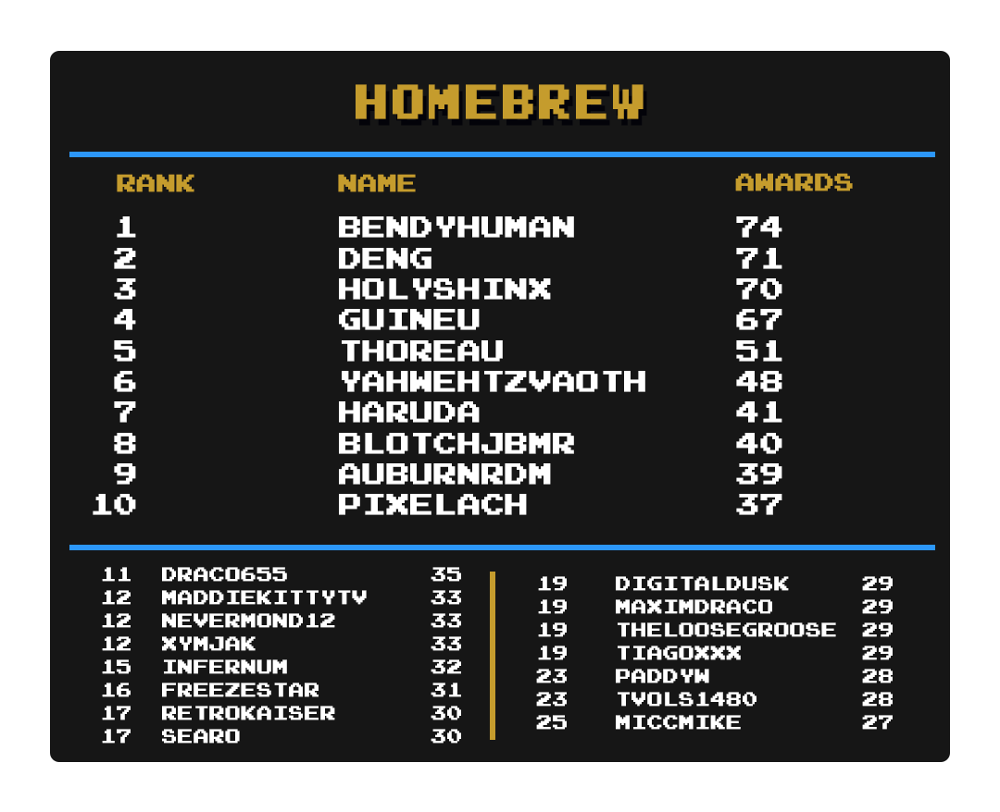
-
Bendyhuman has a little breathing room in 1st place with 2 new mastery awards this month.
-
 AuburnRDM has made it into the top 25 and is sitting at 9th place with 26 new mastery awards this month.
AuburnRDM has made it into the top 25 and is sitting at 9th place with 26 new mastery awards this month. -
 Maximdraco has made it into the top 25 and is sitting in a 4-way tie for 19th place.
Maximdraco has made it into the top 25 and is sitting in a 4-way tie for 19th place. -
Tvols1480 has made it into the top 25 and is sitting in a 2-way tie for 23rd place.
Master System
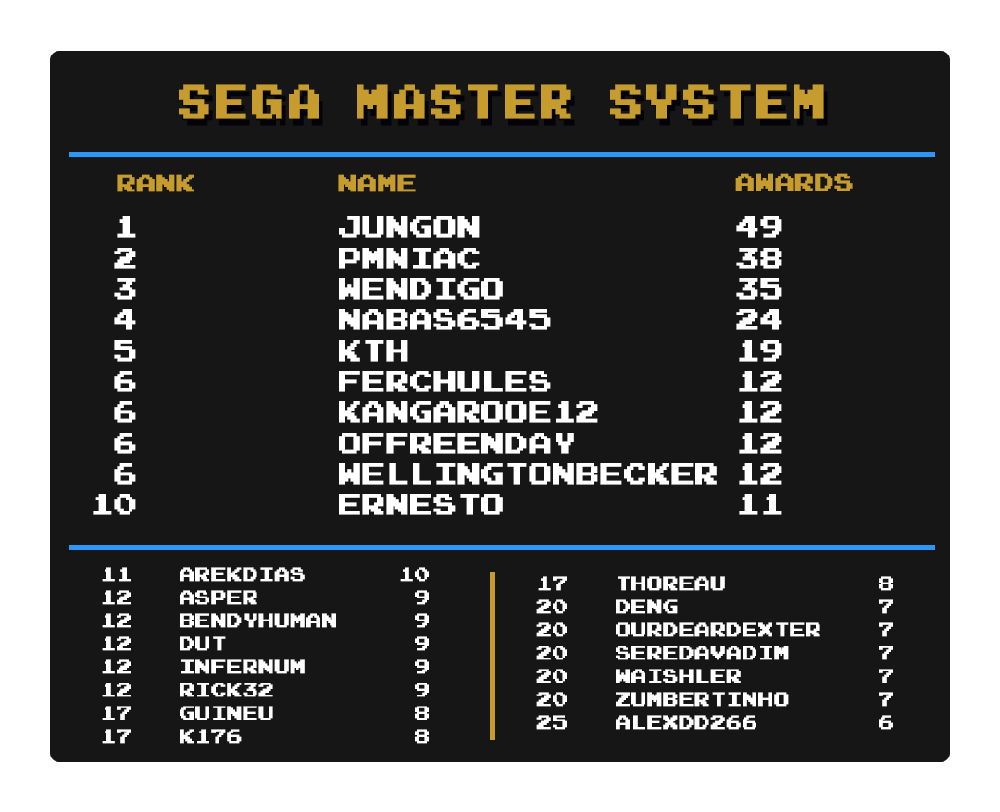
- Very little change in the top half of this leaderboard, only 3 new mastery awards total between the top 11 users.
-
DUT and Infernum have jumped into an 8-way tie for 12 place with 1 and 3 new mastery awards this month.
-
 ourdeardexter has made it into the top 25 and is sitting in a 5-way tie for 20th place.
ourdeardexter has made it into the top 25 and is sitting in a 5-way tie for 20th place. -
 AlexDD266 has made it into the top 25 and is sitting in a 10-way tie for 25th place.
AlexDD266 has made it into the top 25 and is sitting in a 10-way tie for 25th place.
Mega Drive
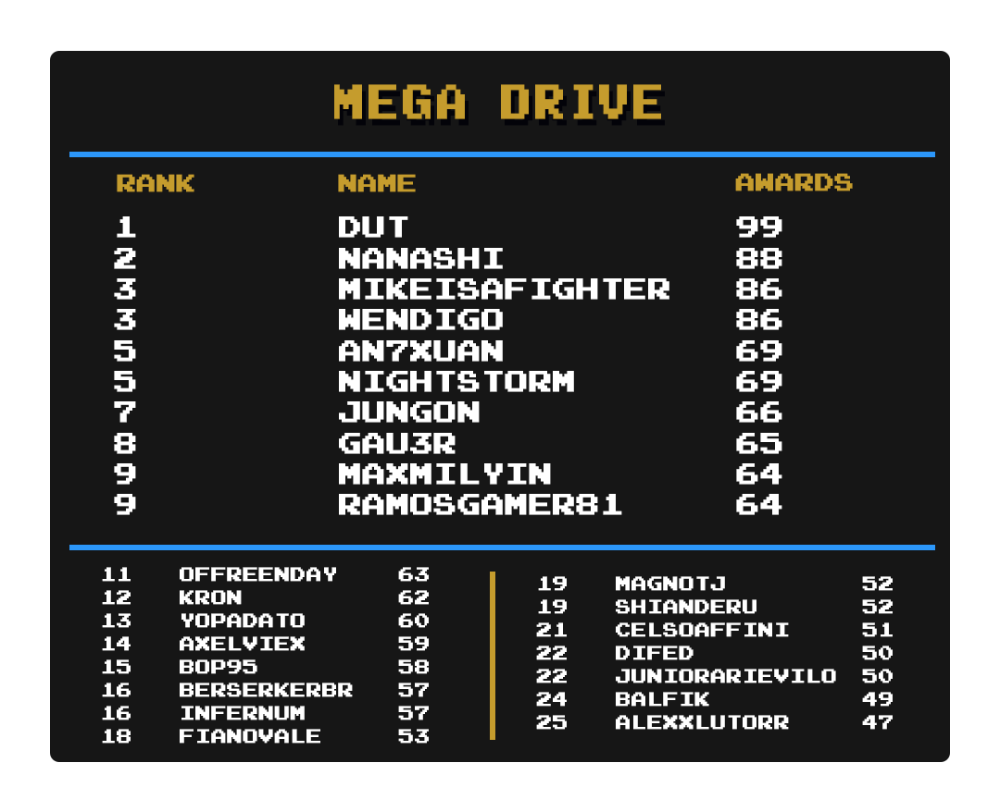
- Very little change in this leaderboard, DUT is still just 1 mastery award shy of hitting 100.
-
 offreenday has jumped up 1 spot into 11th place.
offreenday has jumped up 1 spot into 11th place. -
 fianovale has jumped up 3 spots into 18th place.
fianovale has jumped up 3 spots into 18th place. -
 an7xuan and
an7xuan and  Nightstorm are still tied in 5th place with 69 awards, nice.
Nightstorm are still tied in 5th place with 69 awards, nice.
N64
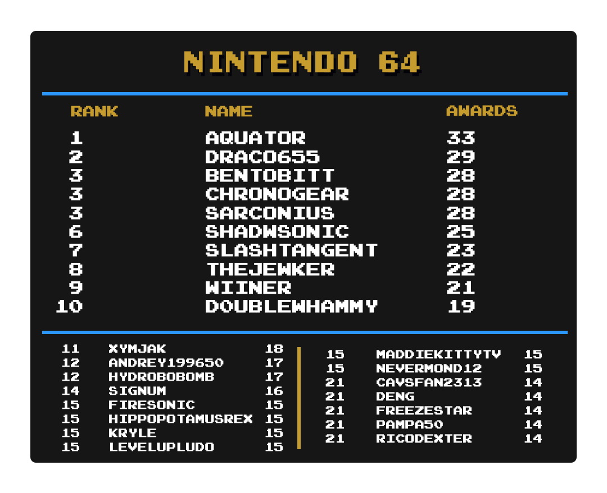
-
Aquator continues to hold onto the top spot.
-
 Signum has moved into the 14th place.
Signum has moved into the 14th place. -
 Pampa50 has made it into the top 25 and is sitting in a 6-way tie for 21st place.
Pampa50 has made it into the top 25 and is sitting in a 6-way tie for 21st place.
NES
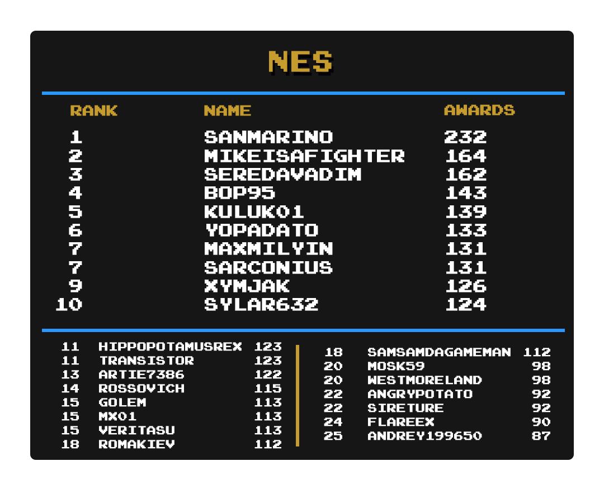
-
SanMarino extends their lead in 1st place with 3 new mastery awards this month.
-
 Transistor moved into a tie for 11th place with 4 new mastery awards this month.
Transistor moved into a tie for 11th place with 4 new mastery awards this month. -
 RomaKiev moved into a tie for 18th place with 9 new mastery awards this month.
RomaKiev moved into a tie for 18th place with 9 new mastery awards this month.
Nintendo DS
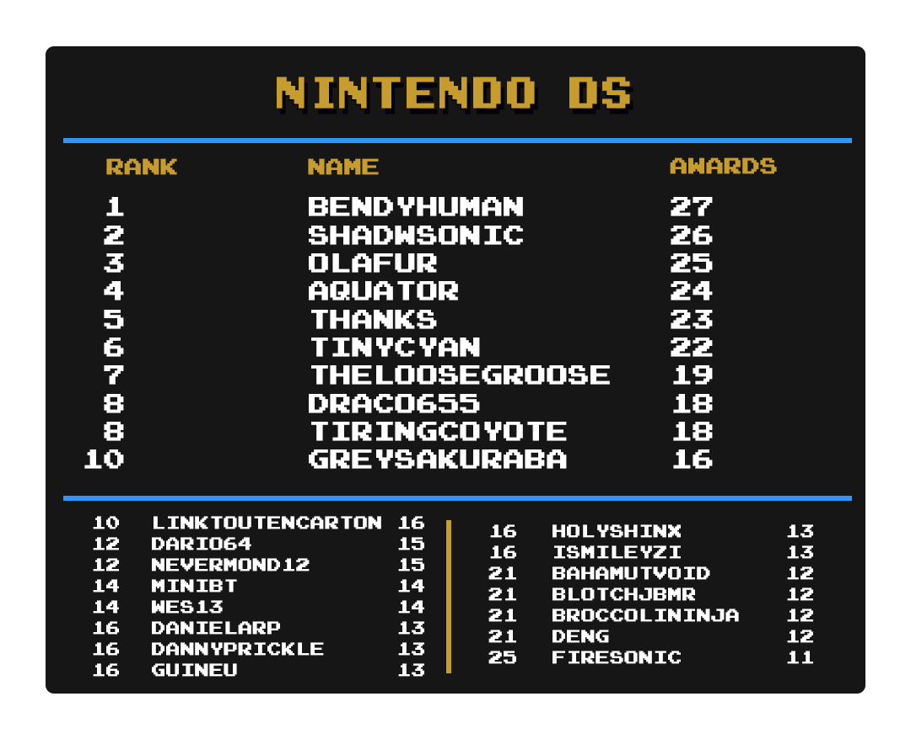
-
Bendyhuman has taken back 1st place with 1 new mastery award this month.
-
 Olafur has moved into 3rd place with 1 new mastery awards this month.
Olafur has moved into 3rd place with 1 new mastery awards this month.
PC Engine
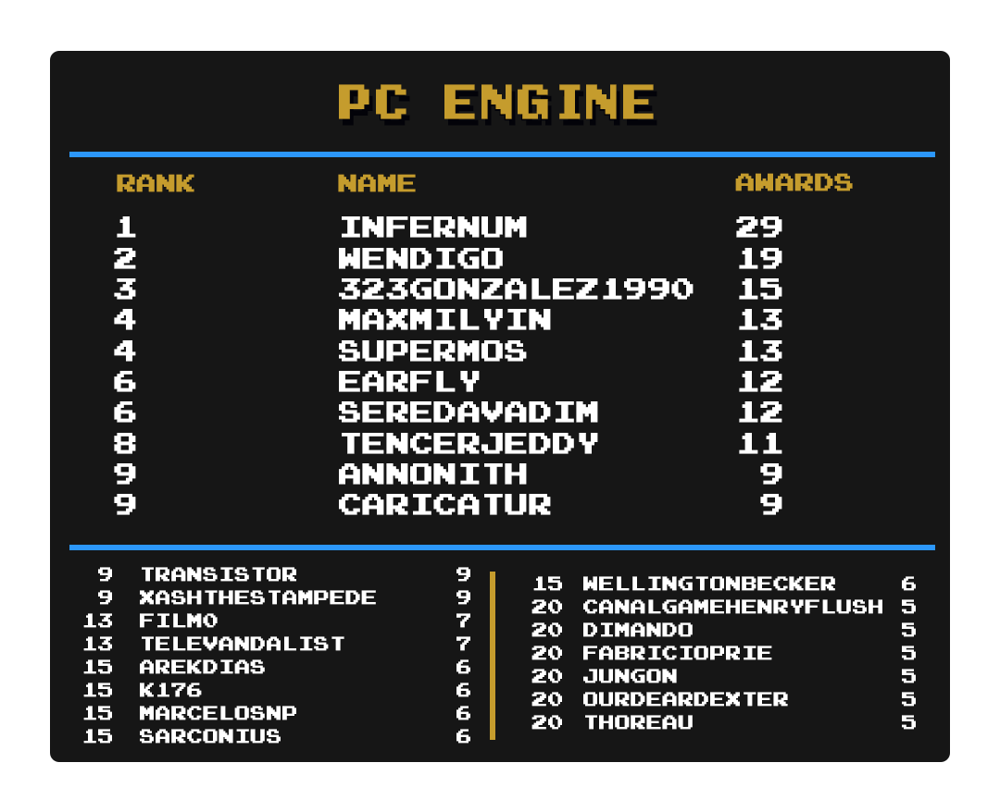
-
Infernum has extended the 1st place lead with 9 new mastery awards this month.
-
 supermos has moved into a tie in 4th place with 1 new mastery award this month.
supermos has moved into a tie in 4th place with 1 new mastery award this month. -
WellingtonBecker has made it into the top 25 and is sitting in a 5-way tie for 15th place.
PlayStation
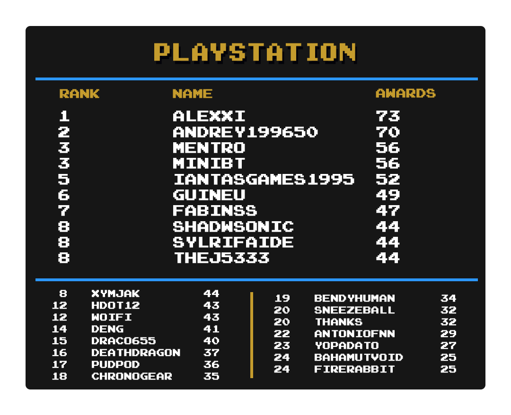
-
 Mentro moves into a tie for 3rd place with 3 new mastery awards this month.
Mentro moves into a tie for 3rd place with 3 new mastery awards this month. -
 Hdot12 moves into a tie for 12th place with 5 new mastery awards this month.
Hdot12 moves into a tie for 12th place with 5 new mastery awards this month. -
 BahamutVoid has made it into the top 25 and is sitting in a 4-way tie for 24th place.
BahamutVoid has made it into the top 25 and is sitting in a 4-way tie for 24th place.
PlayStation Portable
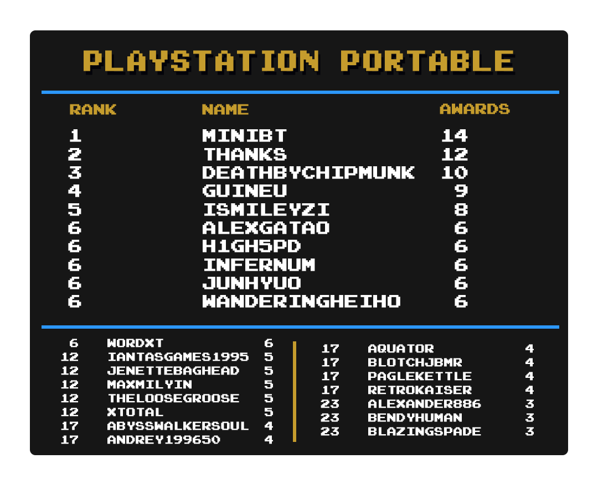
-
 deathbychipmunk,
deathbychipmunk,  WordXT,
WordXT,  Jenettebaghead, MaxMilyin,
Jenettebaghead, MaxMilyin,  TheLooseGroose,
TheLooseGroose,  Andrey199650,
Andrey199650,  PagleKettle, and
PagleKettle, and  Alexander886 have all joined the top 25 this month.
Alexander886 have all joined the top 25 this month. - Two months in and already a lot of changes on the leaderboard.
Pokémon Mini
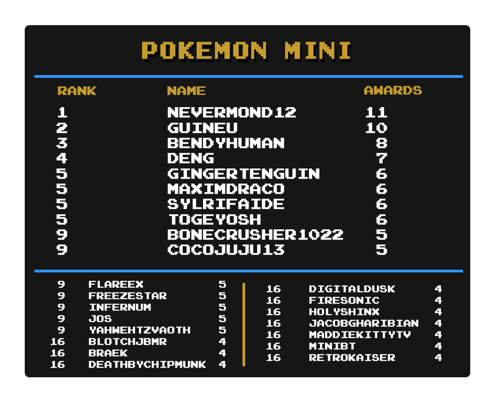
-
Nevermond12 has taken over 1st place with 1 new mastery award this month.
-
 GingerTenguin has made it into the top 25 and is sitting in an 4-way tie for 5th place.
GingerTenguin has made it into the top 25 and is sitting in an 4-way tie for 5th place.
Saturn
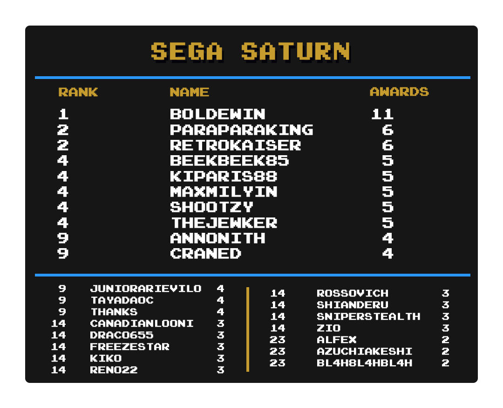
-
 AzuchiAkeshi and
AzuchiAkeshi and  GalacticSpear have made it into the top 25 and are sitting in an 28-way tie for 23th place.
GalacticSpear have made it into the top 25 and are sitting in an 28-way tie for 23th place. - The rest of the leaderboard remains completely unchanged
SNES
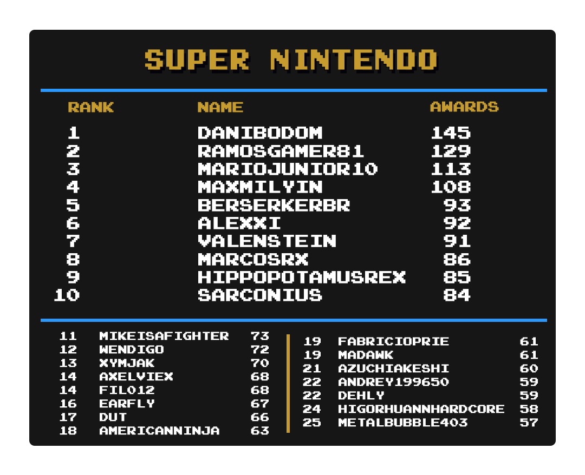
-
danibodom extends their 1st place lead by 5 with 7 new mastery awards this month.
-
DUT jumps up 2 places into 17th place with 5 new mastery awards this month.
-
metalbubble403 has made it into the top 25 and is sitting at 25th place.
Watara Supervision
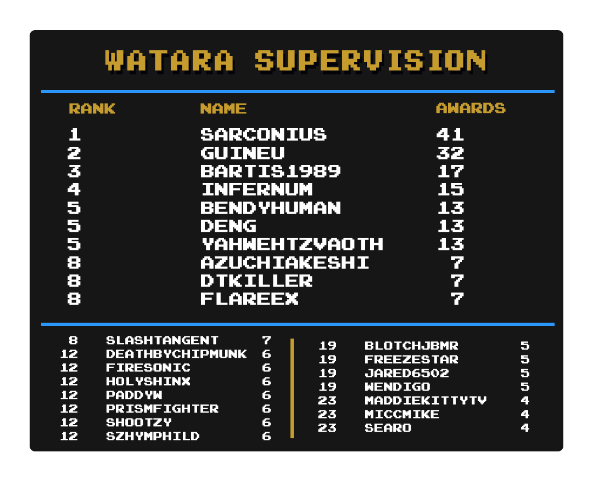
-
Sarconius still has a healthy lead at the 1st place spot.
-
deathbychipmunk has jumped into a 7-way tie for 12th place with 6 new mastery awards this month.